По сайту
Куда держим курс?
Ежедневно с 11:00 до 20:00
Москва, ул. Строителей, д. 7, корп. 1Метро «Вавиловская» и «Университет»
Записи Олега Гугунавы
Поставки, рецепты и жизнь лавки — от самого капитана. Полный архив — в авторском телеграм-канале.
Читать весь журнал в Телеграме
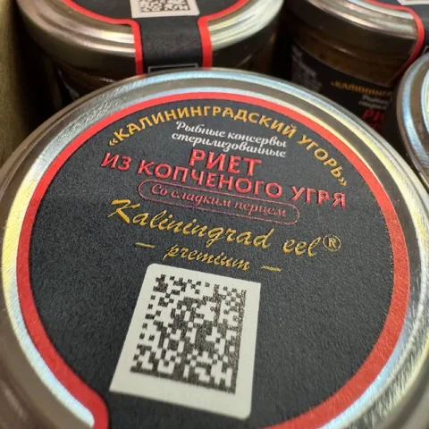
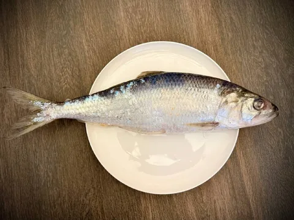
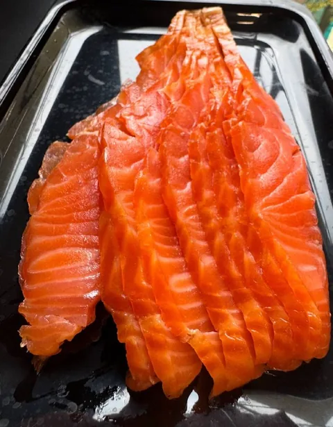
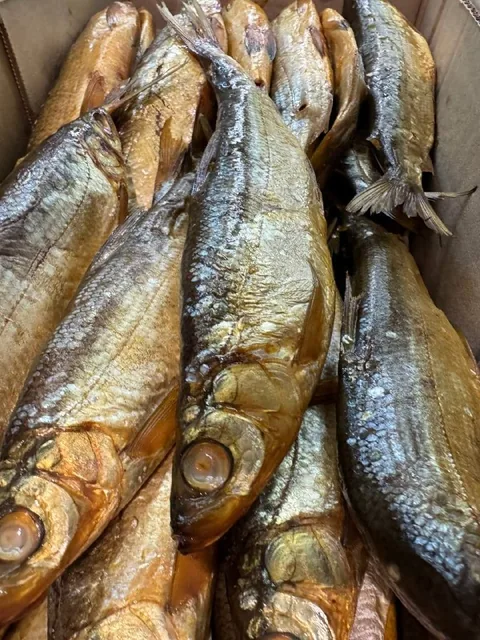
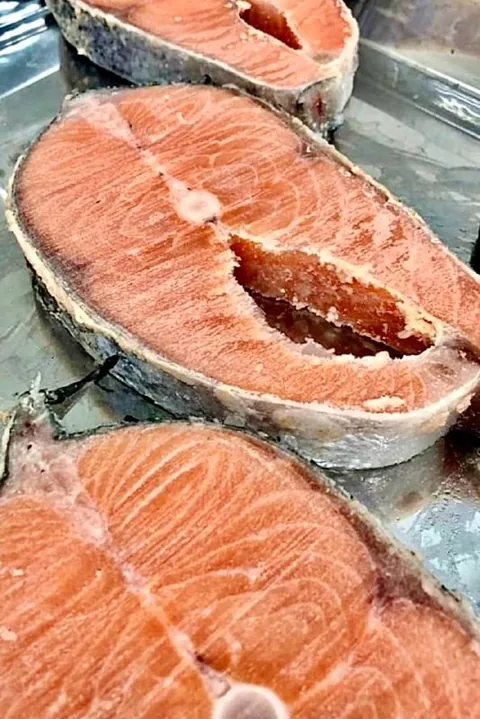

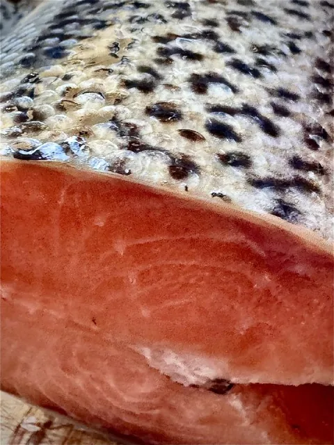
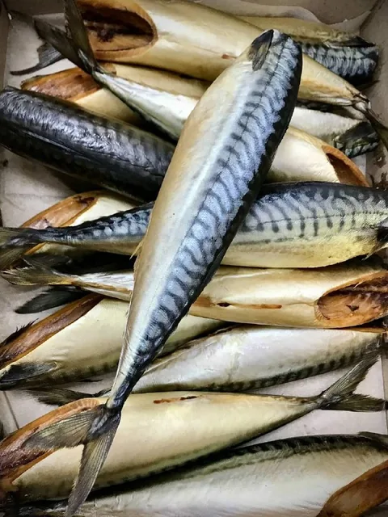
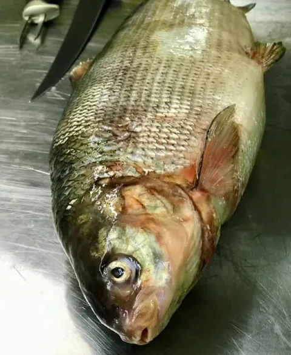
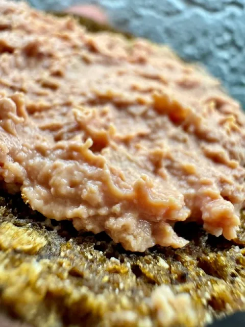
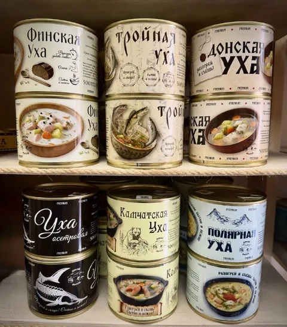
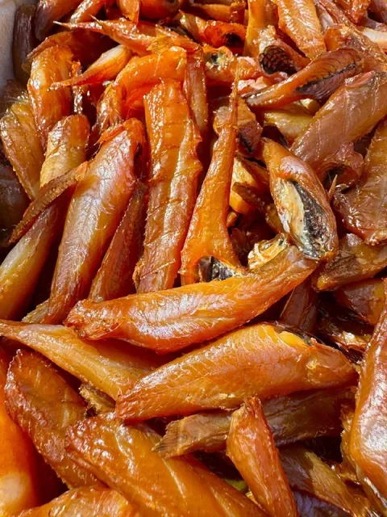
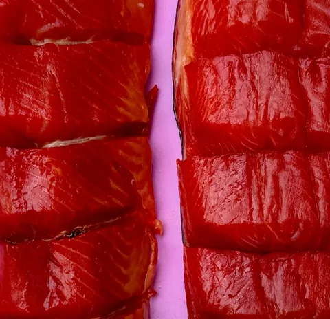
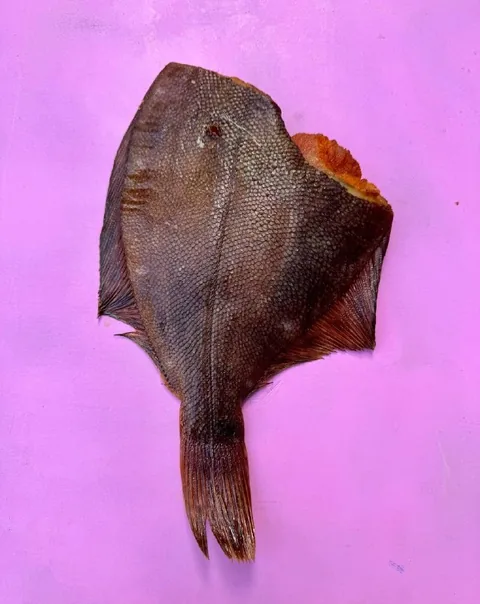
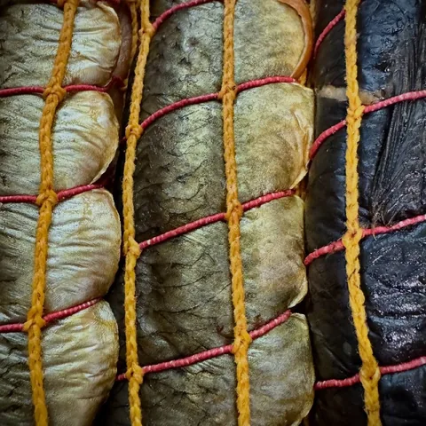
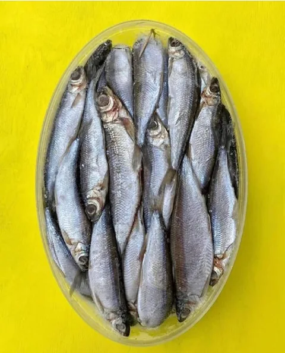
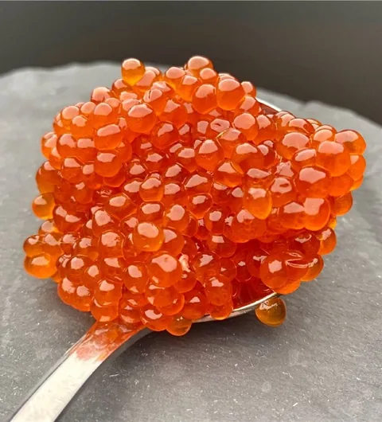
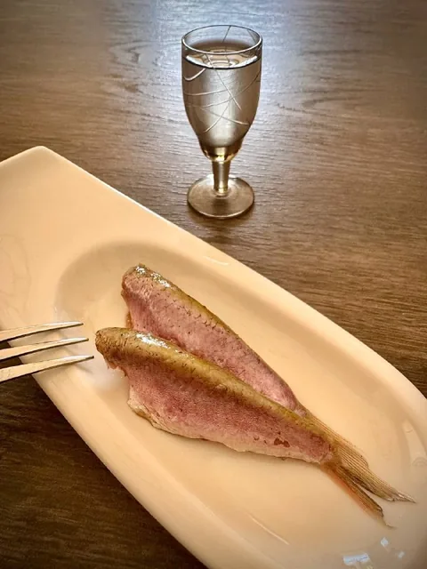